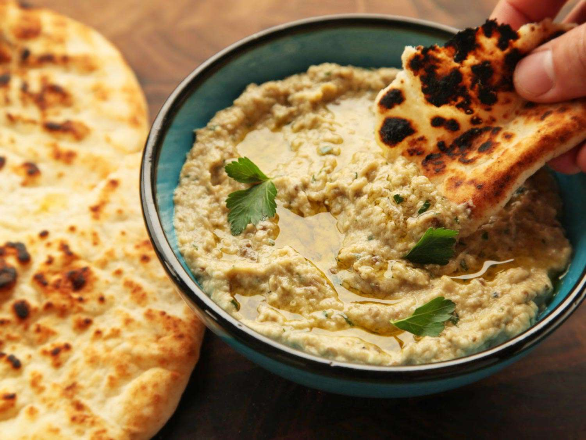

Baba Ganoush

What is Baba Ganoush?
If you’re asking, “what the heck is baba ganoush don’t worry – it’s a lot simpler than it sounds. Baba ganoush is a Mediterranean eggplant dip made from roasted or grilled eggplant, tahini, olive oil, lemon juice, garlic, and salt. Like hummus, it’s delicious with pita or fresh veggies, but its silky texture and irresistible smoky flavor set it apart. This baba ganoush recipe is a must-try summer dip!
So, what do we need?
- 2 medium eggplant
- ¼ cup tahini
- 3 tablespoons fresh lemon juice
- 2 tablespoons extra-virgin olive oil, more for serving
- 22 garlic cloves
- ½ teaspoon sea salt
- inely chopped parsley, for garnish
- Pinch of smoked paprika
- 2Pinch of red pepper flakes, optional
- Pita and veggies, for serving
🤔And now there comes the question, how to make it?!🤔
1. Preheat the oven to 400°F and wrap the eggplant in foil. Roast the eggplant for 50 to 60 minutes, or until it is soft and collapses to the touch. Remove from the oven and set aside.
2. Once cool to the touch, peel the skin from the eggplant, removing any big clumps of seeds. Place the flesh in a strainer over a bowl and let stand for 20 minutes to remove excess water
3. Place the eggplant flesh, tahini, lemon juice, olive oil, garlic, and salt in a food processor and pulse until smooth. Transfer to a serving dish, sprinkle with chopped parsley, smoked paprika, and red pepper flakes, if using. Serve with pita and veggies.
Go back home